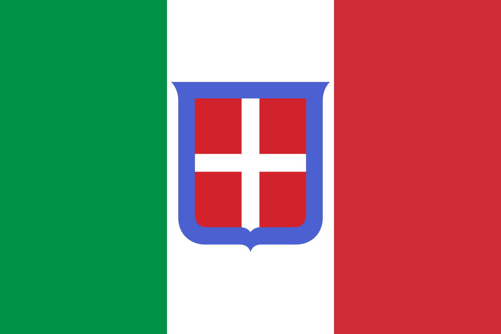

Італія під час Другої світової війни
Королівство Італія (італ. Regno d'Italia) — державне утворення на території Апеннінського півострова що виникло у 1861 році в ході Рісорджименто і що об'єднало всі незалежні італійські держави в єдину країну під владою Сардинського королівства. Савойська династія, що правила в Сардинському королівстві, стала правлячою династією об'єднаного королівства Італії. Після референдуму 1946 року Італія перейшла від монархічної форми правління до республіканської, а королівська сім'я виїхала з країни.
Прапор Королівства Італія
Королівство Італія вступило у Другу світову війну на боці країн Осі 10 червня 1940 року, оголосивши війну Великій Британії та Франції. 28 жовтня 1940 Італія оголосила війну Греції, 6 квітня 1941 — Югославії. 22 червня 1941 Італія разом з країнами Осі напала на СРСР. 11 грудня 1941 Італія разом з Німеччиною оголосила війну США.
Італійські війська брали участь у боях на півдні Франції, в Північній Африці, в Греції і Югославії, а також на східному фронті проти СРСР. За період з 1940 по 1943 роки під італійською окупацією знаходилися частини територій Франції, Югославії, Греції, а також захоплена в 1939 Албанія.
До 1943, в результаті військових невдач і кризи в тилу, Італія втратила всі свої колонії в Африці, а також Сицилію. 25 липня 1943 фашистський лідер Італії Беніто Муссоліні був заарештований. 3 вересня 1943 новий італійський уряд уклав перемир'я з США та Великою Британією. 8 вересня 1943 капітуляція Італії набрала чинності.
У вересні 1943 Німеччина окупувала Північну і Центральну Італію. 12 вересня 1943 р. Муссоліні був звільнений німецькими військами. 23 вересня 1943 р. на окупованих Німеччиною італійських територіях була проголошена Італійська соціальна республіка, яка продовжувала війну аж до свого краху в 1945.
Королівський уряд Італії 13 жовтня 1943 р. оголосив війну Німеччині та країнам Осі. На окупованих німцями територіях Італії розгорнулося партизанський рух опору. Зусиллями партизан і англо-американських військ Італія була звільнена від німецької окупації. 28 квітня 1945 Муссоліні був розстріляний[1]. 29 квітня 1945 німецькі війська в Італії капітулювали.
Повернутись назад